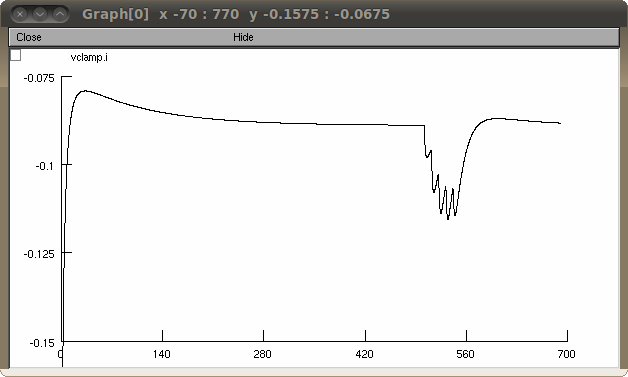
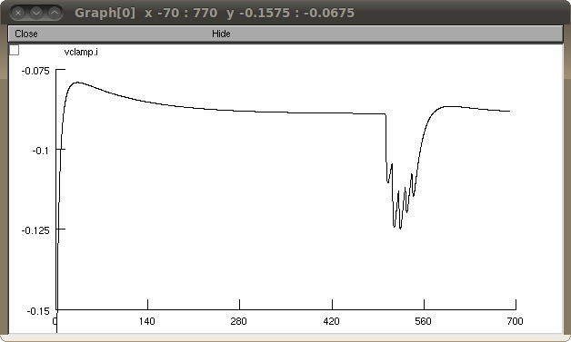

This archive contains the NEURON files from the paper: Computational modeling of the effects of amyloid-beta on release probability at hippocampal synapses. Armando Romani, Cristina Marchetti, Daniela Bianchi, Xavier Leinekugel, Panayiota Poirazi, Michele Migliore and Hélène Marie Front. Comput. Neurosci. (2013); doi: 10.3389/fncom.2013.00001 The CA1 pyramidal model is from Bianchi et al. (2012), with the kinetic scheme introduced by Tsodyks et al. (1998) to model changes in release probability and synaptic integration. Usage: Auto-launch from ModelDB or download and extract this archive, compile the mod files (mknrndll in mswin and mac OS X, nrnivmodl in unix/linux) in the experiment folder and use nrngui to start the simulation.hoc file in the "experiment" directory. Once started press the "Run" button in the presented dialog box to reproduce the ctrl results in Figure 2 of the paper:  To reproduce Abeta results, set the variable U= 0.36 in the panel and click 'Run'. You should see a graph like this:  Questions on the NEURON simulation should be addressed to (replace -at- with the usual @ symbol): romani.armando -at- gmail.com danielabianchi12-at-gmail.com Changelog --------- 2024-11: Updated hoc files to use Random123